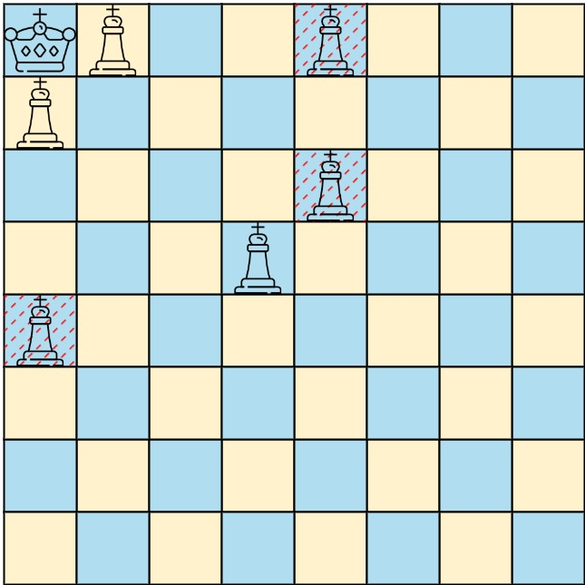
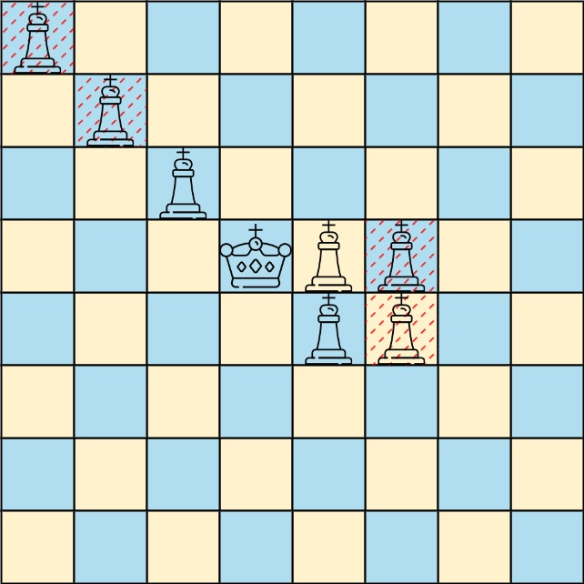

1222. 可以攻击国王的皇后
从国王向 8 个方向逐格扫：每个方向遇到的第一个皇后才能攻击，再远的被它挡住。
思路
- 皇后位置放进
8×8布尔棋盘；从国王向 8 个方向逐格走。 - 每个方向遇到的第一个皇后即攻击者，立刻停下：同方向更远的皇后都被它挡住。
- 棋盘固定 8×8，扫描总共最多 64 格，与皇后个数无关；输出顺序题面不限。
图解
最优解
1import java.util.*;2 3class Solution {4 // 8 个方向（行 x 向下为正，列 y 向右为正）；扫描顺序只影响输出顺序，题面允许任意顺序5 private static final int[][] DIRS = {{0, 1}, {1, 0}, {1, 1}, {0, -1}, {-1, 0}, {-1, -1}, {1, -1}, {-1, 1}};6 7 public List<List<Integer>> queensAttacktheKing(int[][] queens, int[] king) {8 boolean[][] has = new boolean[8][8];9 for (int[] q : queens) has[q[0]][q[1]] = true;10 List<List<Integer>> ans = new ArrayList<>();11 // 从国王向每个方向逐格走：遇到的第一个皇后就能攻击，再远的都被它挡住12 for (int[] d : DIRS) {13 int x = king[0] + d[0], y = king[1] + d[1];14 while (x >= 0 && x < 8 && y >= 0 && y < 8) {15 if (has[x][y]) {16 ans.add(Arrays.asList(x, y));17 break;18 }19 x += d[0];20 y += d[1];21 }22 }23 ans.sort((a, b) -> a.get(0) != b.get(0) ? a.get(0) - b.get(0) : a.get(1) - b.get(1));24 return ans;25 }26}题目
在一个 下标从 0 开始 的 8 x 8 棋盘上，可能有多个黑皇后和一个白国王。
给你一个二维整数数组 queens，其中 queens[i] = [xQueeni, yQueeni] 表示第 i 个黑皇后在棋盘上的位置。还给你一个长度为 2 的整数数组 king，其中 king = [xKing, yKing] 表示白国王的位置。
返回 能够直接攻击国王的黑皇后的坐标。你可以以 任何顺序 返回答案。
示例 1：

输入：queens = [[0,1],[1,0],[4,0],[0,4],[3,3],[2,4]], king = [0,0] 输出：[[0,1],[1,0],[3,3]] 解释：上面的图示显示了三个可以直接攻击国王的皇后和三个不能攻击国王的皇后（用红色虚线标记）。
示例 2：

输入：queens = [[0,0],[1,1],[2,2],[3,4],[3,5],[4,4],[4,5]], king = [3,3] 输出：[[2,2],[3,4],[4,4]] 解释：上面的图示显示了三个能够直接攻击国王的黑皇后和三个不能攻击国王的黑皇后（用红色虚线标记）。
提示：
1 <= queens.length < 64queens[i].length == king.length == 20 <= xQueeni, yQueeni, xKing, yKing < 8- 所有给定的位置都是 唯一 的。
题面取自力扣当前版本。
数据快照 2026-11-04。题面版权归力扣所有，本站点仅供本人学习使用，请勿对外发布。